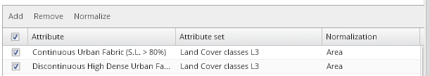
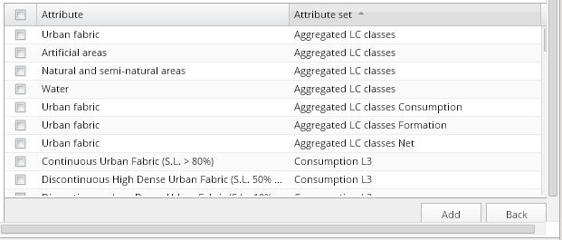

To add attributes to the chart attribute list, press the “Add” button over the table header:

This action opens the complete attribute list for currently active visualization:

You can use ascending or descending sorting, as well as filtering by text string, for both attributes and attribute sets.
Select attributes you want to add to the chart by checking their checking boxes and click the "Add" button at the bottom of the list. The dialog returns to the chart attribute list mode. If you decide to return to the initial chart attribute list without modification, use the “Back” button.
Click the button “Configure” under the table in this mode to project your attribute list modifications into the chart. A corresponding chart will be reloaded with all attributes from the list present.
You can also generate a quick overview of selected attributes in the corresponding chart directly from the “Add attribute” dialog, by pressing the “Configure” button under the table.
However, in such case, the chart attribute list will not be modified and the current attribute selection will be only temporary.